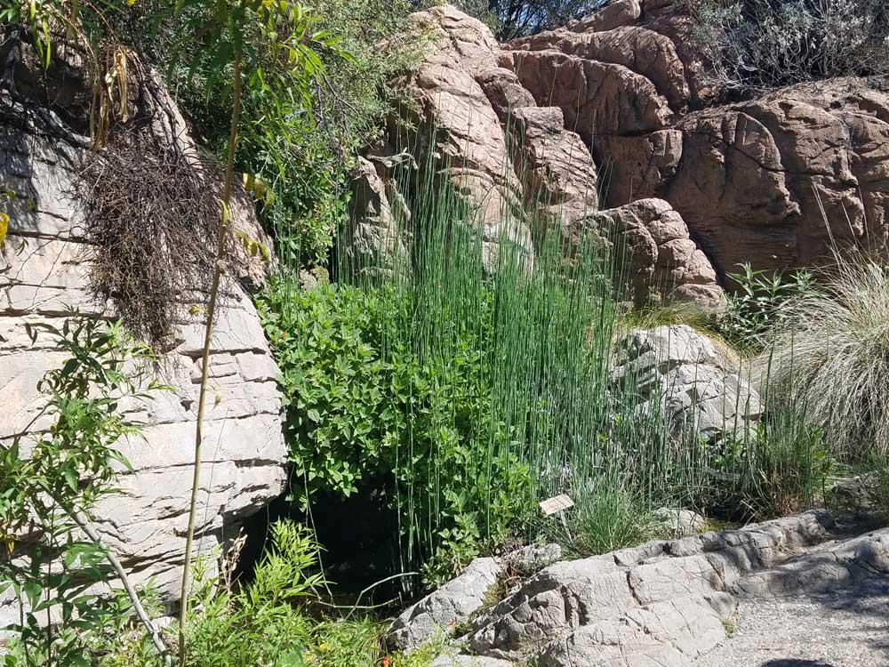
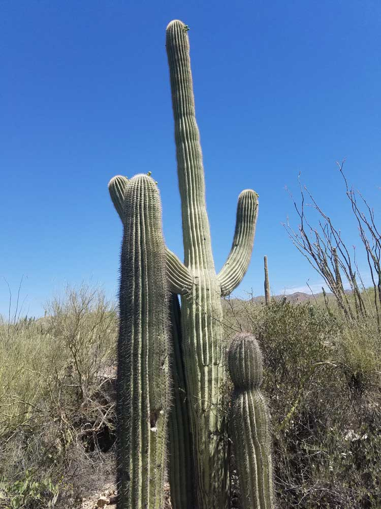
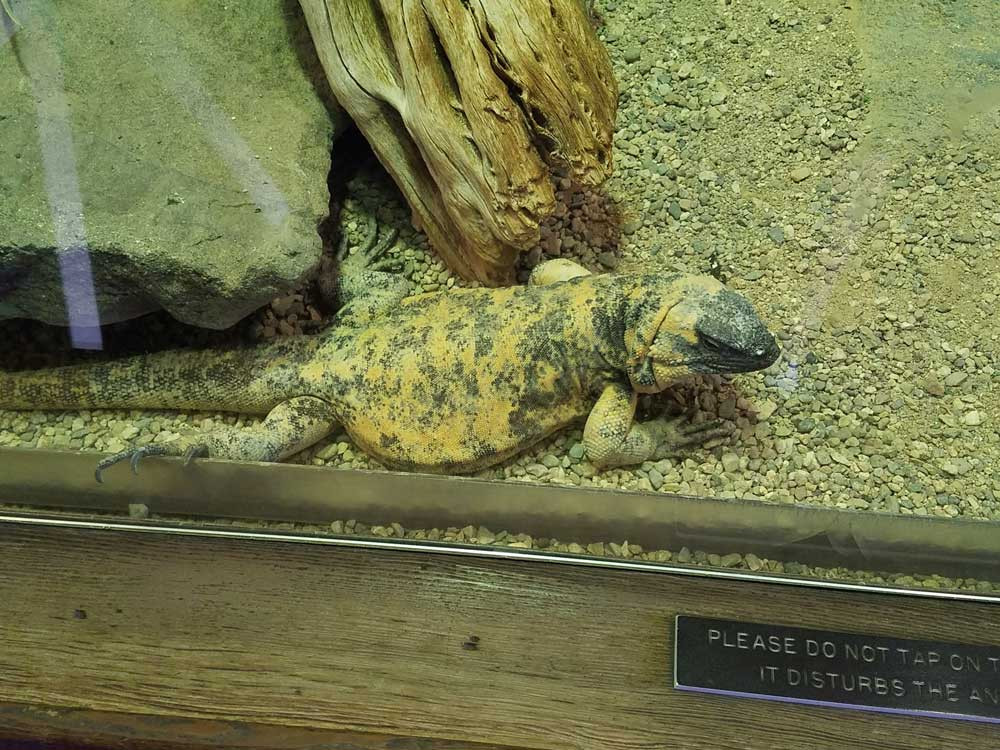
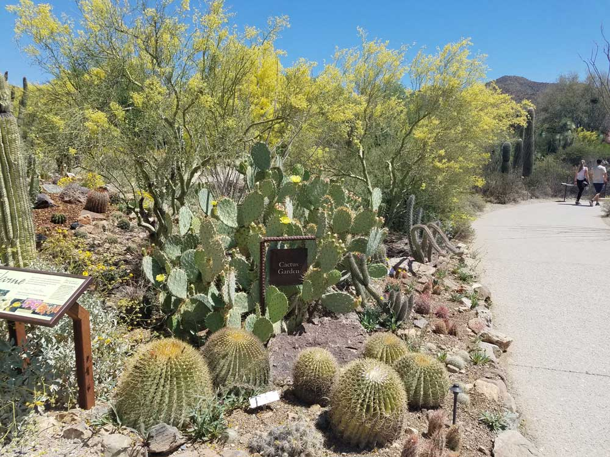
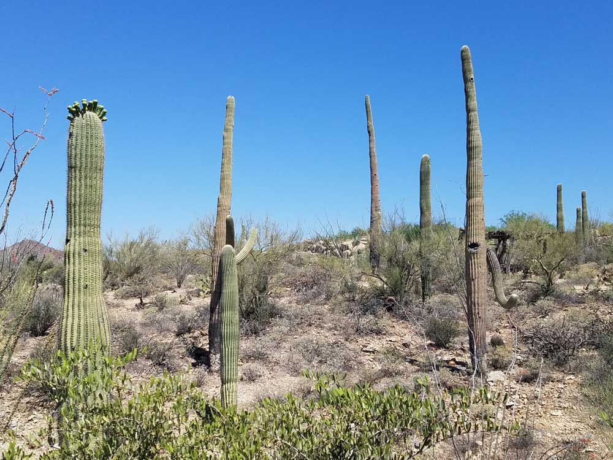
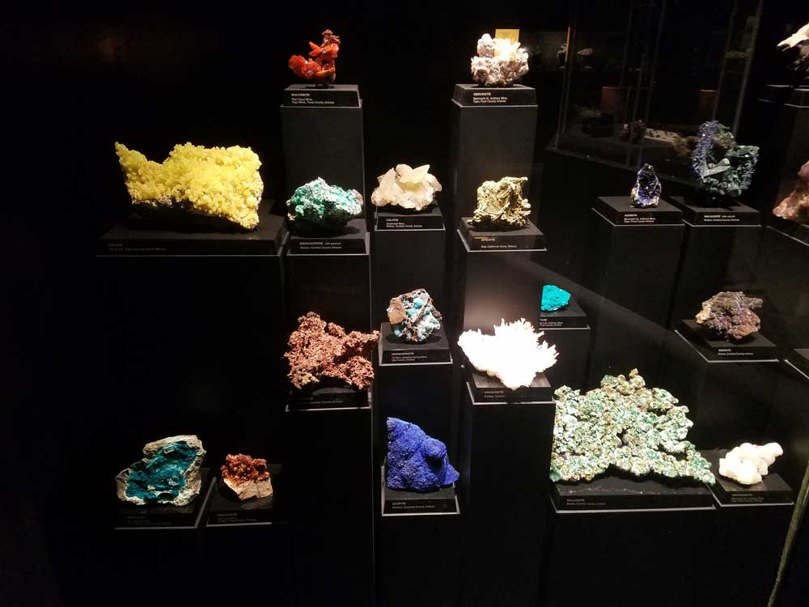
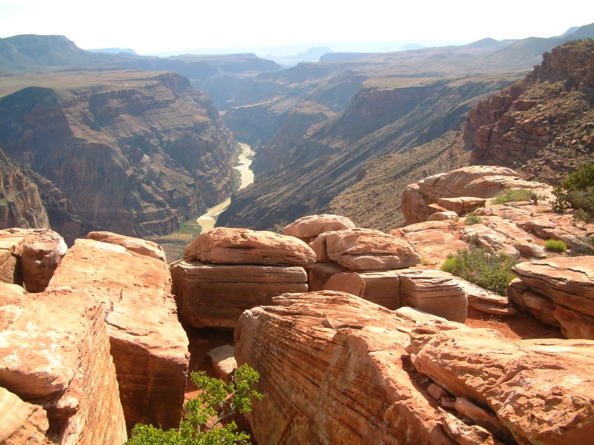
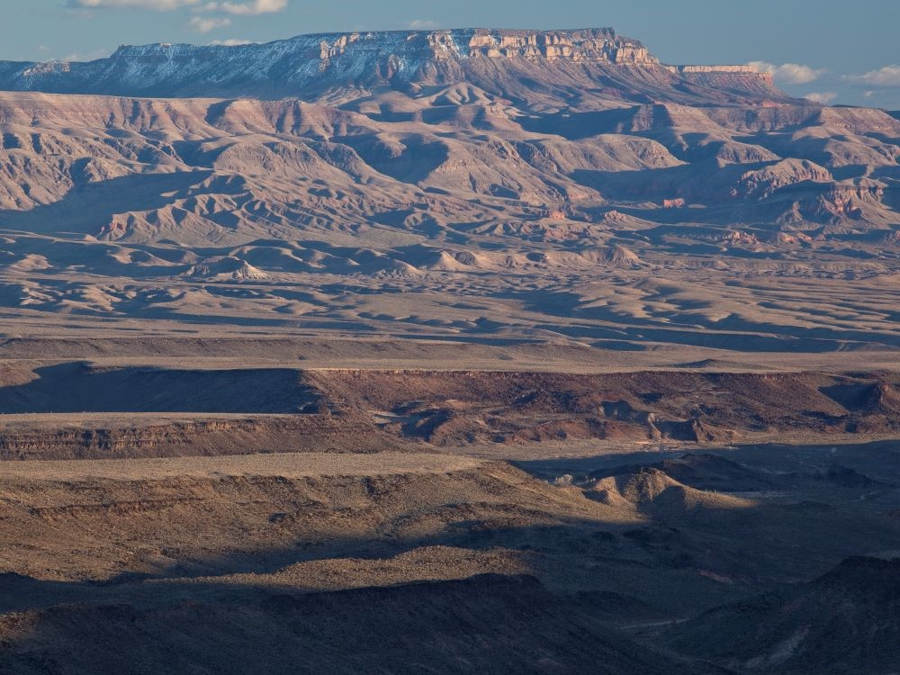
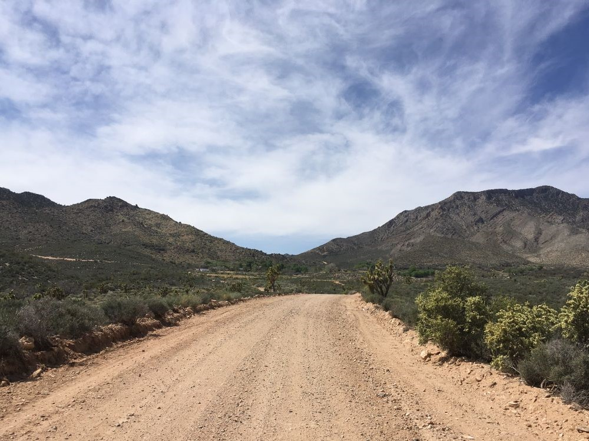

.jpg){kind=link}
Remote wilderness of plateaus, canyons, and volcanic features offering solitude, scenic drives, and backcountry exploration without developed facilities.
General Information
No visitor centers or facilities within the monument
Public Lands Visitor Center in St. George, UT: Mon–Fri, 8:00 AM – 4:30 PM
Closed: Weekends and all federal holidays
No permits or reservations required for general access
Backcountry camping: Free (dispersed only)
Must be leashed (max 6 ft), not left unattended, and cleaned up after
How to Get There
From Page, AZ (180 mi): Take US-89A W through Fredonia, continue on AZ-389 W to St. George, then follow River Road south to BLM roads leading into the monument; high-clearance vehicles recommended.
Overview
Grand Canyon-Parashant National Monument protects more than a million acres of remote, rugged and undeveloped country on the Arizona Strip, the high desert north of the Grand Canyon and west of the Kaibab Plateau. Established in 2000 and jointly managed by the National Park Service and the Bureau of Land Management, it is known for its sweeping views of the western Grand Canyon, volcanic peaks, canyons and thousands of archaeological and historic sites. Mount Trumbull, a basalt-capped mesa covered in pinyon-juniper and ponderosa pine, rises from the desert and is a landmark of the region, and the monument's dark night skies are among the best in the country. People come to escape the crowds of the national park, explore dirt roads and backcountry, and experience solitude.
Access
The monument is extremely remote, reached only by long, rough dirt roads from St. George, Utah (about 50 miles to the edge), Colorado City and Fredonia, Arizona. Many roads, including the main routes to Mount Trumbull and the Grand Canyon overlooks, are unpaved, rutted and can become impassable after rain or snow, so a high-clearance vehicle, often four-wheel drive, is strongly recommended. There are no services, fuel, food or water in the monument, and cell service is rarely available. Carry a full-size spare tire, extra water, food and maps, and let someone know your plans.
Seasons
Spring and fall are the best times to visit, with moderate temperatures and more reliable road conditions. Summers are very hot at lower elevations, and monsoon storms from July to September can quickly make roads impassable. Winter brings snow and mud to higher elevations such as Mount Trumbull, and many roads close or become unsafe. Some roads and campgrounds close seasonally, so check conditions with the National Park Service or the BLM before departing.
Things to Do
Explore One of the Most Remote National Monuments in the Lower 48 States
Grand Canyon-Parashant National Monument protects more than one million acres of rugged canyon country, volcanic mountains, desert plateaus, and wilderness landscapes in northwestern Arizona. Managed jointly by the Bureau of Land Management and the National Park Service, the monument offers a remote backcountry experience with spectacular scenery, archaeology, and solitude far from developed tourist destinations.
Discover Stunning Grand Canyon Overlooks
The monument contains several dramatic viewpoints overlooking the western Grand Canyon. Unlike the heavily visited South Rim, these overlooks provide a quiet and uncrowded opportunity to experience the immense scale, geology, and beauty of one of the world's most famous natural wonders.
Visit Toroweap (Tuweep) Overlook
Toroweap Overlook is among the monument's most iconic destinations. Perched approximately 3,000 feet above the Colorado River, the overlook provides breathtaking vertical views into the Grand Canyon and is considered one of the most dramatic viewpoints anywhere in the National Park System.
Explore Volcanic Landscapes and Lava Fields
The monument contains numerous volcanic features, including lava flows, cinder cones, and extinct volcanoes associated with the Uinkaret Volcanic Field. These geological formations help tell the story of the region's dynamic volcanic history and its influence on the Colorado River and Grand Canyon.
Discover Ancient Cultural Sites
Grand Canyon-Parashant preserves thousands of archaeological resources, including prehistoric Puebloan sites, rock art panels, historic ranches, and evidence of Indigenous occupation stretching back thousands of years. Many locations highlight the cultural significance of the region to Native American communities.
Experience Dark Skies and Backcountry Adventure
With minimal development and little light pollution, the monument is an exceptional destination for stargazing, astrophotography, camping, wildlife viewing, and remote backcountry exploration. Visitors often enjoy some of the darkest night skies in the American Southwest.
Top Trails
Toroweap Overlook Trail
Length: Approximately 1 mile round trip
Elevation Gain: Minimal
Difficulty: Easy
This short walk leads to the spectacular Toroweap Overlook, where visitors can stand near the edge of the canyon and view the Colorado River thousands of feet below. It is one of the most memorable viewpoints in Arizona.
Nampaweap Petroglyph Trail
Length: Approximately 1 mile round trip
Elevation Gain: Minimal
Difficulty: Easy
This trail leads to one of the largest known petroglyph sites in Arizona. Visitors can view hundreds of ancient rock carvings while learning about the region's Indigenous history and cultural heritage.
Mount Trumbull Trail System
Length: Various routes from 2 to 8 miles
Elevation Gain: Moderate to Significant
Difficulty: Moderate
Trails around Mount Trumbull explore high-elevation forests, volcanic terrain, and scenic viewpoints overlooking the monument's vast wilderness landscape. Wildlife viewing opportunities are common throughout the area.
Whitmore Canyon Overlook Route
Length: Varies depending on route
Elevation Gain: Moderate
Difficulty: Moderate
This remote route provides access to another remarkable Grand Canyon viewpoint. Visitors are rewarded with expansive vistas of the Colorado River corridor and the rugged canyon landscape below.
Visitor Centers
There is no visitor center within the monument. The best sources of maps, road conditions and permits are the Arizona Strip Interagency Information Center in St. George, Utah, and the National Park Service and BLM websites. The Interagency Information Center is staffed on weekdays and can provide current information on road closures and recommended routes. Because services are so limited, plan your route and supplies well before heading out.
Camping and Lodging
There are no developed campgrounds or lodging in the monument, but dispersed backcountry camping is allowed in many areas under BLM and NPS rules. Hotels and restaurants are in St. George, Utah, about an hour from the edge of the monument, and in Fredonia and Kanab, about 1.5 to 2 hours away. Page, Arizona, and the Grand Canyon's North Rim, which has its own campground and lodge, are also within a few hours. Check each location's website for current availability.
Sources: Bureau of Land Management official Grand Canyon-Parashant National Monument information, including details on Toroweap, Mount Trumbull, archaeological resources, recreation opportunities, wilderness areas, and visitor access.
National Park Service.
This article uses material from the Wikipedia articles "Grand Canyon-Parashant National Monument", and "Mount Trumbull Wilderness", which are released under the Creative Commons Attribution-Share-Alike License 3.0
This article uses material from nps.gov "Grand Canyon-Parashant National Monument"








.jpg){kind=link}

.jpg){kind=link}
